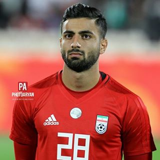

Sadegh Moharrami
Iranian footballer
Sadegh Moharrami is an Iranian footballer who currently plays as a defender for Dinamo Zagreb in Croatian First Football League. Wikipedia
Born: March 1, 1996 (age 26 years), Hashtpar
Height: 1.74 m (5 ft 9 in)
Current team: Dinamo Zagreb
Position(s): Right-back